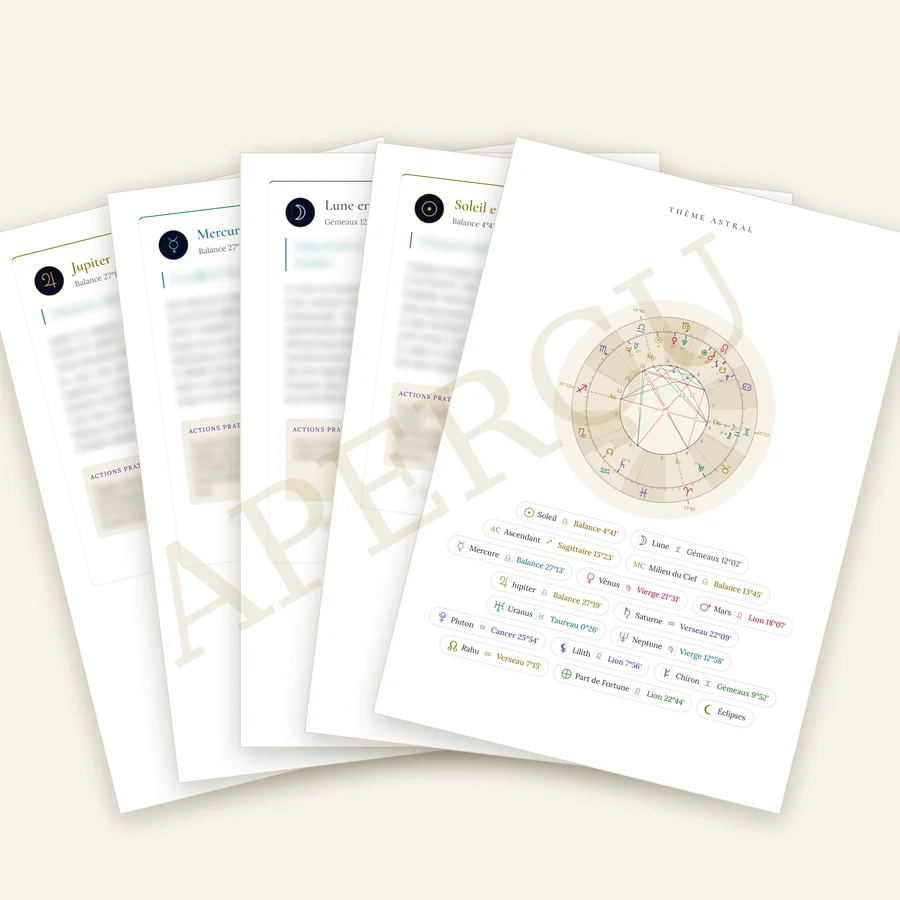
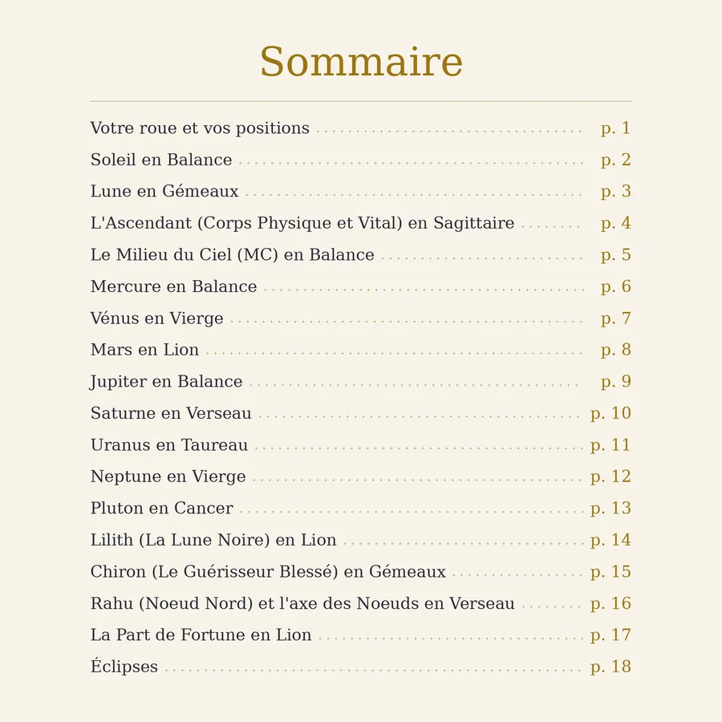
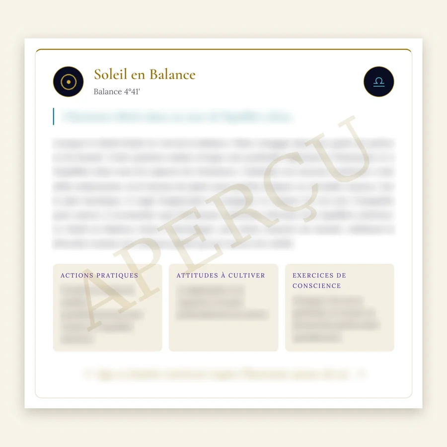
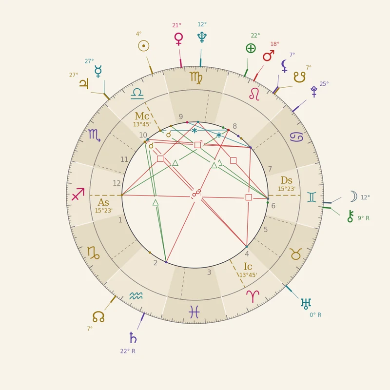
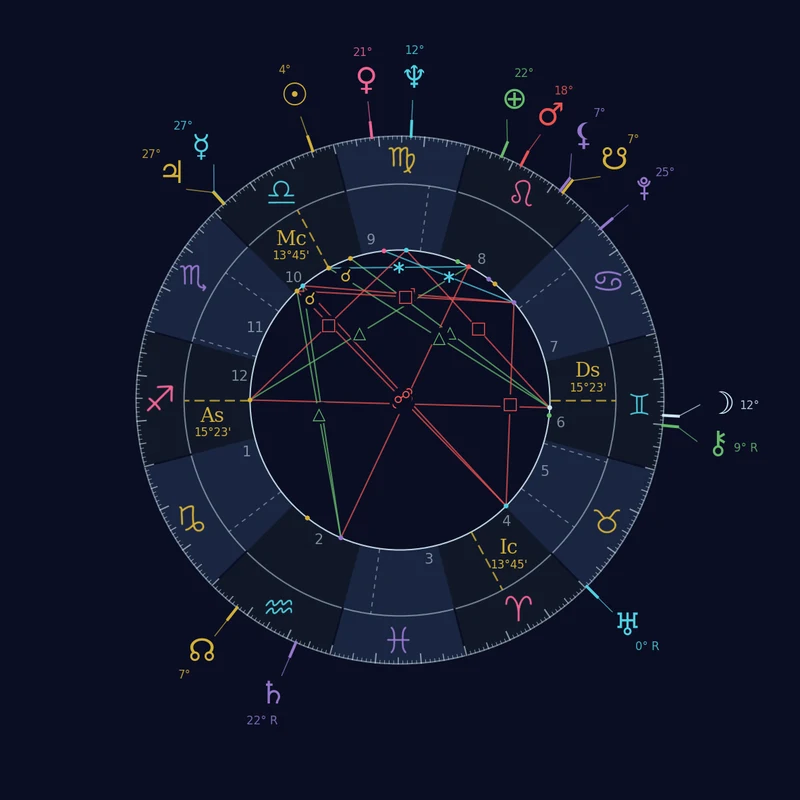

Astrologie occitane
AstroGabriel Trésors
Votre thème natal, calculé avec précision et interprété avec soin

Une transmission
J'ai appris l'astrologie à 15 ans avec mon beau-père, astrologue formé à l'enseignement de Max Heindel. Il calculait chaque thème à la main, avec un livre d'éphémérides et une table des maisons : une demi-heure de calculs par personne. J'ai écrit mon propre logiciel pour faire ce même calcul en une seconde, à la minute près. La tradition reste la même ; l'outil a changé.
Les planètes ont une influence sur le mental et le psychisme de l'être humain. Les animaux, eux, sont liés à la nature, à la Terre mère : ils sont influencés par l'énergie du groupe. L'être humain, lui, a pour origine le ciel, et le ciel est sa destination future.
Ce que vous recevez
Un dossier PDF d'une vingtaine de pages, organisé comme un petit livre, à lire à l'écran, à imprimer ou à offrir :
- la roue de votre thème, le ciel au moment exact de votre naissance ;
- le résumé de vos positions planétaires ;
- 16 fiches d'interprétation : Soleil, Lune, Ascendant, planètes, Lilith, Chiron, Nœuds lunaires, Part de Fortune ;
- une page sur les éclipses : celle qui a précédé votre naissance, et celles des trois prochaines années qui touchent votre thème.



Un exemple : Brigitte Bardot


Née le 28 septembre 1934 à 13 h 15, à Paris.
Une interprétation karmique et évolutive : tout pour mieux vous connaître et affronter les épreuves
Chaque fiche commence par un texte d'explication, puis se termine par trois encadrés. J'écris moi-même tous les textes.
Actions pratiques
Pour le quotidien.
Attitudes à cultiver
Exercices de conscience
Pour mieux se connaître.
39 €
Votre dossier sous 48 heures
ou écrivez à gabriel.ridaya@protonmail.com
Comment commander
- Écrivez-moi avec votre prénom, votre date, votre heure et votre lieu de naissance. L'heure est indispensable pour calculer l'Ascendant et les maisons.
- Je vous réponds avec un lien de paiement PayPal.
- Je vous envoie votre dossier par e-mail.
Vos données de naissance servent seulement à calculer votre thème.
Bientôt : la révolution solaire (votre année d'un anniversaire à l'autre), les transits et la synastrie (la relation entre deux thèmes).